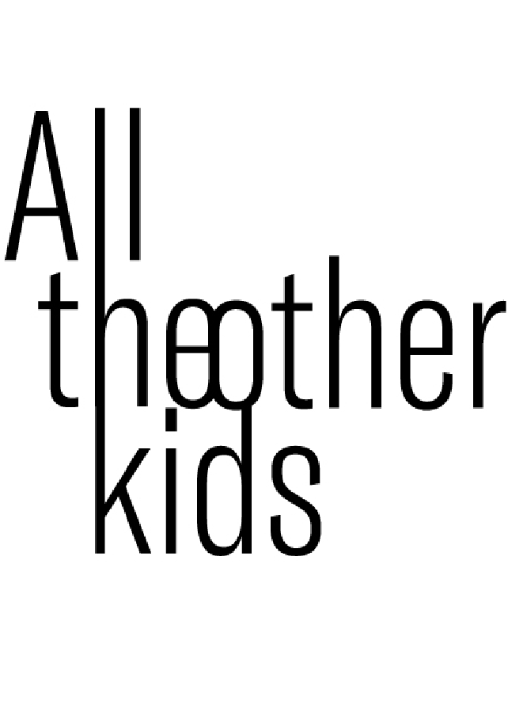

¡Hola!
Almost before we knew it, we had left the ground.Almost before we knew it, we had left the ground.Almost before we knew it, we had left the ground.Almost before we knew it, we had left the groundAlmost before we knew it, we had left the ground.Almost before we knew it, we had left the groundAlmost before we knew it, we had left the ground. before we knew it, we had left the ground